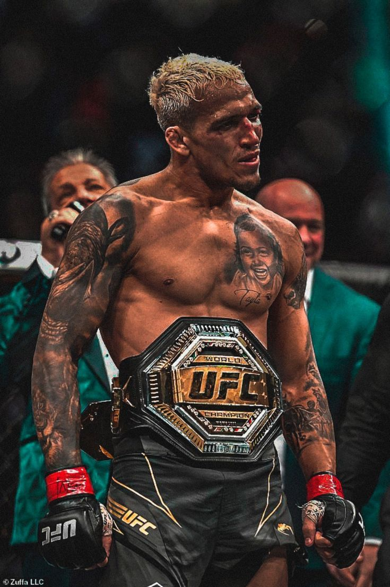

Chales Oliveira
Charles "do Bronx" Oliveira é um lutador brasileiro de MMA e ex-campeão do UFC. Ele nasceu no Guarujá (SP) e é famoso no mundo inteiro por ser o maior finalizador da história do UFC, usando o Jiu-Jitsu como sua principal arma. Charles é conhecido por sua história de superação e por seu estilo de luta agressivo e empolgante.